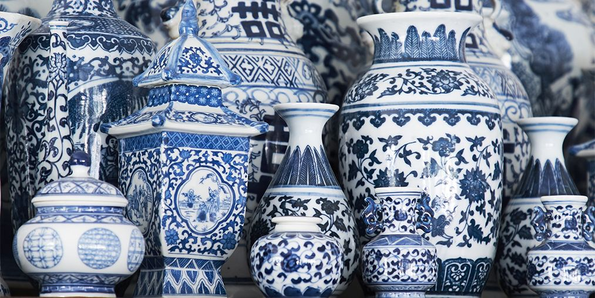
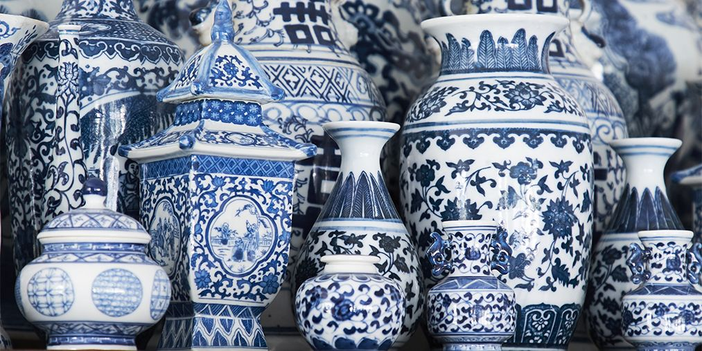

Art Keepers
Sculpture, Jan 14, 2019
Greek Statue
Every block of stone has a statue inside it amd it is a task of a sculptur to discover it. the sculptur must search with passionate intensity for the underlying principle of the organization of the mass and tension- the meaning of gesture and the structure of rhythm. A person who is interested in the shape of things. A poet in words. A musician by sounds.
Photograph-Keepers
Lonely flower, Aug 18, 2015
(Flower Name)
It takes a lot of imagination to be a good photographer. You need less imagination to be a painter because you can invent things. But in photography everything is so ordinary; it takes a lot of looking before you learn to see the extraordinary.
About Us
The Gallery features original works by contemporary and traditional artists in a range of mediums, including painting, ceramics and sculpture. Our artists come from around the world many of the cities most well-known and emerging artists have exihibited their works in group and solo shows.
Popular Post
Gallery
 
